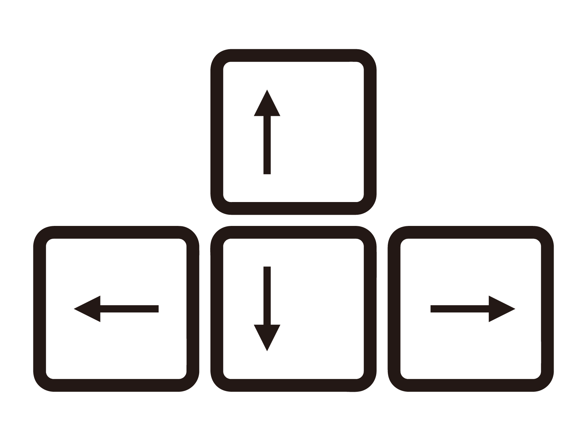

ー物語について
D〇AGON QUEST同様に勇者が魔王を倒すため旅立ちます。
旅の途中魔物が襲い掛かってくるかもしれませんが、頑張って倒してください。
ー操作方法
方向キー:キャラクターの移動及びカーソルの移動
Enterキー,Zキー:決定
ーQ&A
Q.要は何すればいいの？
A.うろついてると魔物が出るのでそれを倒してLvをあげてください。
最終的にどこかにいる魔王を倒せばクリアです。
Q.HPが回復できなくてすぐ死ぬんだけど。
A.城や町、民家に入るとHPが全快するので定期的に寄りましょう。
Lvの低いうちは城周辺から離れないことをお勧めします。
Q.セーブ機能ってないの？
A.ありません。めんどくさいので作ってません。
Enterキー,Zキー:決定
A.うろついてると魔物が出るのでそれを倒してLvをあげてください。
最終的にどこかにいる魔王を倒せばクリアです。
A.城や町、民家に入るとHPが全快するので定期的に寄りましょう。
Lvの低いうちは城周辺から離れないことをお勧めします。
A.ありません。めんどくさいので作ってません。